Overview
Power consumption is a key operational factor for embedded devices. The Cypress Low Power Assistant (LPA) allows you to configure a PSoC 6 Host and WLAN (Wi-Fi / BT Radio) device to provide low-power features. This framework presents a unified, low-overhead, user-friendly way to configure, connect, and operate within multiple tasks / cases.
The key points for LPA include:
- Applies to MCU, Wi-Fi, and BT
- This is for RTOS-oriented applications (FreeRTOS, Mbed OS, Amazon FreeRTOS).
- Only the configuration is required; no functions should be called in runtime. Once the LPA middleware is configured, it is transparent to the application. Application code changes are not needed and the application runs as normal.
- There are different flows:
- ModusToolbox Device Configurator Flow.
- Manual Configuration Flow.
Features
There are various use cases for the LPA covered in the following sections. The LPA allows you to configure different parts of your design to be energy efficient.
- Part 1. MCU Low Power Provides the integration between the low-power firmware and the IOT framework (most notably, the RTOS) used in the system to be energy efficient.
- Part 2. Wi-Fi Low Power
- Wi-Fi Host-wake Signal Provides a way for a WLAN device to wake up the Host MCU from its low-power state.
- Wi-Fi Address Resolution Protocol (ARP) Offload Improves the power consumption of your connected system by reducing the time the Host needs to stay awake due to ARP broadcast traffic. In general, the ARP Offload reduces broadcast traffic.
- Wi-Fi Packet Filter Offload Allows the host processor to limit which types of packets get passed up to the host processor from the WLAN subsystem. This is useful to keep out unwanted/unneeded packets from the network that might otherwise wake up the host out of a power saving Deep Sleep mode, or prevent it from entering Deep Sleep mode.
- Part 3. Bluetooth Low Power Configures BT low-power features that enable the host to achieve its lowest power function. It also configures the wake host interrupt signal (device to host) and related device integration.
The listed capabilities make the LPA middleware useful for a variety of applications, including automotive, IoT, and industrial.
The LPA middleware provides an easy way to make the low-power features of Cypress devices available to developers in the form of a portable configuration layer. LPA consists of the following components:
- One of these components is a configurator tool (using a personality), which makes the low-power features of the system easy to use (ModusToolbox Device Configurator Tool Guide). This personality writes data structures that are processed by firmware and implement the choices made in the personality.
- This firmware is another component of the LPA feature. The firmware is used at system initialization and does not require user interaction.
- A small firmware module provides the integration between the low-power firmware and the IOT framework (most notably the RTOS) used in the system. This final piece of firmware will be part of the IOT framework you are using.
Getting Started
The Cypress LPA middleware can be used in various software environments including Mbed OS. The quickest way to get started is by using the Code Examples. Cypress Semiconductor continuously extends its portfolio of code examples at the Cypress Semiconductor website and at the Cypress Semiconductor GitHub website. The following Quick Start Guide sections describe several use cases for using the LPA features:
Refer to the Supported Software and Tools section for compatibility information.
Refer to the Changelog for the differences between the Middleware versions.
The LPA efficiency for several use cases is included in the Performance Data section.
For more details about LPA and ModusToolbox, refer to the More Information section.
Definitions
This section lists definitions used throughout this document.
| Acronym/Term | Definition | Remark |
| AP | Access Point | Wireless Access Point connection for the Device (e.g., Wireless Router). |
| ARP | Address Resolution Protocol | ARP is a procedure for mapping a dynamic Internet Protocol (IP) address to a permanent physical machine address in a local area network (LAN). |
| BT | Bluetooth | Bluetooth is a wireless technology standard. |
| Device | WLAN Device | The Wi-Fi and/or BT radio module (WLAN Processor). |
| Host | Host Processor | The Host (or Application) processor (e.g., PSoC 6). |
| LPA | Low Power Assistant | |
| OLM | Offload Manager | |
| OOB | Out-Of-Band | |
| Configurator | Cypress Configuration Tool | Configurators are a set of powerful but intuitive tools that work together to set up various MCU features. Each Configurator generates very readable, user-modifiable firmware to initialize the whole device with a single function call. Refer to the . |
| Personality | Information File | Personalities are files that define how resources are used by a Configurator. The Low Power Assistant functionality is embedded in the Device Configurator as a personality. |
| SDIO | Secure Digital Input / Output | |
| WLAN | Wireless Local Area Network | WLAN means any wireless local area network no matter what technology is used and Wi-Fi is a type of WLAN that follows the IEEE 802.11 standards |
Part 1. MCU Low Power
The MCU low-power feature allows you to take advantage of the power saving features of a PSoC MCU simply by configuring a few parameters. Using the MCU low-power feature, you can configure the system to achieve maximum power savings during system idling or to establish maximum performance by operating only in Active power mode. This feature works in conjunction with real time operating systems (RTOS), such as Mbed OS.
There are two parameters available: System Idle Power Mode and Deep Sleep Latency.
The System Idle Power Mode parameter defines the power state that the MCU needs to enter automatically any time the system is idle. Setting it to Active power mode disables power saving and allows the system to perform tasks with less intervention, since there are no transitions to / from CPU Sleep / System Deep Sleep states.
The Deep Sleep Latency parameter controls if the desired deep sleep time is larger than needed to perform a transition from System Deep Sleep to Active power mode to perform tasks.
Quick Start Guide
This section provides step-by-step instructions for how to use the MCU Low Power feature with Mbed OS, as well as its impact on the device power consumption.
Prerequisites:
- A development environment configured for Mbed OS. Refer to the Supported Software and Tools section for the required Mbed OS version.
- Availability of the CY8CKIT-062S2-43012 pioneer kit (or other kits that supports PSoC 6 power consumption measurement). The CY8CKIT-062S2-43012 kit is recommended, since this section documents measurement instructions for this kit. If other kit is used, refer to its documentation and learn how to measure current consumed.
- DC Power Monitor or Ammeter.
Perform the following steps to evaluate the device power consumption with different MCU Low Power configurations:
- Import the mbed-os-example-blinky example project and switch to the example directory:
mbed import mbed-os-example-blinky
cd mbed-os-example-blinky
- As a one-time operation, you might need to execute the following lines as part of enabling the CY8CKIT_062S2_43012 pioneer kit:
python -m pip install --upgrade pip
pip install mbed-ls --upgrade
mbedls -m 190B:CY8CKIT_062S2_43012
- Execute the following command in order to replace Mbed OS, download the LPA middleware, and connectivity utilities:
rm -rf mbed-os
mbed add https:
mbed add https:
mbed add https:
mbed add https:
mbed deploy
- Set the desired System Idle Power mode (DeepSleep, Sleep or Active). In Mbed OS, the System Idle Power mode is set to Deep Sleep by default to achieve the best power saving. This step can be done by using the ModusToolbox Device Configurator or by manually updating the code.
- Perform the following steps in order to configure the MCU Low Power by using the ModusToolbox Device Configurator:
- Mandatory steps to avoid design.modus file modification in mbed-os folder
- Copy folder mbed-os-example-blinky/mbed-os/targets/TARGET_Cypress/TARGET_PSOC6/TARGET_CY8CKIT_062S2_43012 to mbed-os-example-blinky folder
- Delete all files in mbed-os-example-blinky/TARGET_CY8CKIT_062S2_43012 except COMPONENT_BSP_DESIGN_MODUS folder and its contents
- Rename mbed-os-example-blinky/TARGET_CY8CKIT_062S2_43012/COMPONENT_BSP_DESIGN_MODUS to mbed-os-example-blinky/TARGET_CY8CKIT_062S2_43012/CUSTOM_BSP_DESIGN_MODUS
- Delete design.cyqspi and design.cycapsense file in mbed-os-example-blinky/TARGET_CY8CKIT_062S2_43012/CUSTOM_BSP_DESIGN_MODUS
- Add/update mbed_app.json in mbed-os-example-blinky folder with below details (This will tell mbed to ignore the BSP configuration shipped with MbedOS)
{
"target_overrides": {
"*": {
"target.components_remove": ["BSP_DESIGN_MODUS"]
}
}
}
- Navigate to the ModusToolbox installation folder and launch the ModusToolbox Device Configurator (<install_dir>/tools_2.0/device-configurator).
- Select File->Open, navigate to the board's design.modus file, and open it: mbed-os-example-blinky/TARGET_CY8CKIT_062S2_43012/CUSTOM_BSP_DESIGN_MODUS/design.modus
- Switch to the System tab and select the Power personality in the Resource pane.
- Go to the Parameters pane and change the System Idle Power Mode parameter to Active/Sleep/DeepSleep.
- Save the configuration to generate the necessary code.
- Perform the following steps in order to configure the MCU Low Power manually:
- Open the cycfg_system.h file for the desired board: mbed-os-example-blinky/TARGET_CY8CKIT_062S2_43012/CUSTOM_BSP_DESIGN_MODUS/GeneratedSource/cycfg_system.h
- Set the CY_CFG_PWR_SYS_IDLE_MODE macro:
#define CY_CFG_PWR_SYS_IDLE_MODE CY_CFG_PWR_MODE_DEEPSLEEP
CY_CFG_PWR_MODE_ACTIVE
CY_CFG_PWR_MODE_SLEEP
CY_CFG_PWR_MODE_DEEPSLEEP
- Replace the main.cpp file with below code
#include "mbed.h"
int main()
{
DigitalOut led(LED1);
const int stateTime = 5000;
while (true) {
led = 0;
Cy_SysLib_Delay(stateTime);
led = 1;
wait_ms(stateTime);
}
}
Build the project and program the board. The following command is example for the CY8CKIT_062S2_43012 board, using GCC_ARM as the toolchain:
mbed compile -DMBED_TICKLESS --target CY8CKIT_062S2_43012 --toolchain GCC_ARM --flash --sterm
Note If you cannot program the board, make sure the board DAP-Link mode is selected. Refer to the guide of your kit of how to change the mode.
Check the board operation. Refer to the How to Measure Power Consumption section for corresponding instructions. Observe the power consumption in different states of the main thread (Active, Idle). The illuminated user LED indicates the Active state.The non-illuminated LED indicates the Idle state. The duration of Active/Idle states can be adjusted by changing the stateTime variable value in the main.cpp file. Refer to the following picture for an example of the DC Power Analyzer output:
i. PSoC6 Active state current average
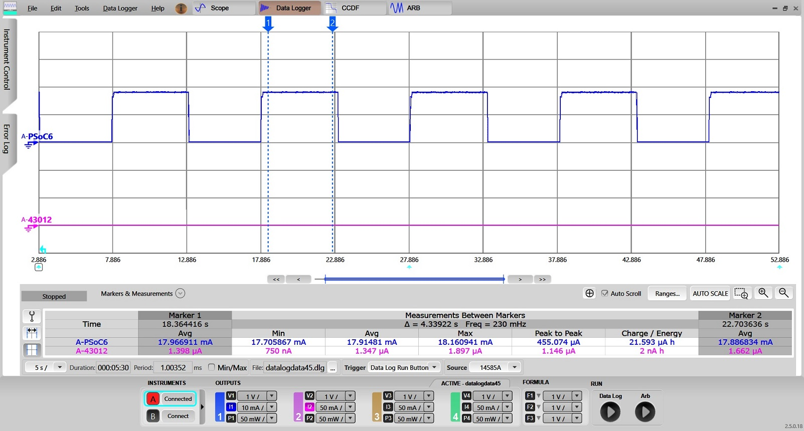
ii. PSoC6 Deep Sleep state current average
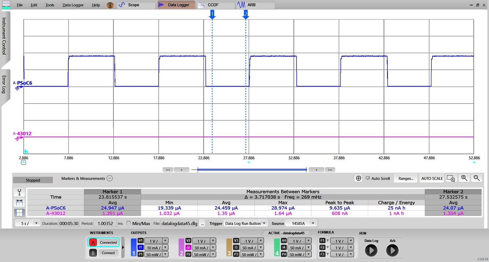
MCU Low Power Configuration Considerations
The following are the different flows to configure LPA middleware:
- ModusToolbox Device Configurator Flow. Generating the initialization code using the ModusToolbox Device Configurator greatly simplifies configuring the PSoC and enabling the LPA features. The ModusToolbox Device Configurator provides the user interface to set up and automatically generate the initialization code (including analog routing) and configuration structures.
- Manual Configuration Flow. Manually adding settings into configuration files. Manual implementation of the initialization code (including analog routing) and configuration structures is recommended for expert users only.
Note If you modify the output of the ModusToolbox Device Configurator, you cannot import it back into the tool.
ModusToolbox Device Configurator Flow
To open the ModusToolbox Device Configurator, right-click on the project in the Project Explorer pane in the ModusToolbox IDE, and select ModusToolbox Configurators > Device Configurator.
- Select the Host device tab, and then select the System tab for that device.
- Enable the Power personality (if disabled) and go to the Power Parameters pane to configure the LPA Middleware.
- Configure RTOS related parameters:
- System Idle Power Mode
- Deep Sleep Latency
- Perform File->Save to generate initialization code.
After saving the configuration file, the generated code is available under the GeneratedSource folder, located in the same directory as the design.modus file in the BSP:
- C Data File: GeneratedSource/cycfg_platform.c
- C Header File: GeneratedSource/cycfg_platform.h
Manual Configuration Flow
Manual configuration is only recommended for experts. To configure the MCU LPA Middleware related parameters not using the ModusToolbox Device Configurator, do the following steps:
- Find and open the cycfg_system.h file under .../GeneratedSource/ folder with a text editor.
- Configure the System Idle Power Mode parameter value by adding / modifying the following macro with one of the possible options:
#define CY_CFG_PWR_MODE_ACTIVE 0x04UL
#define CY_CFG_PWR_MODE_SLEEP 0x08UL
#define CY_CFG_PWR_MODE_DEEPSLEEP 0x10UL
#define CY_CFG_PWR_SYS_IDLE_MODE CY_CFG_PWR_MODE_DEEPSLEEP
- Configure the Deep Sleep Latency parameter value by adding / modifying the following macro with a value from a range 0-10:
#define CY_CFG_PWR_DEEPSLEEP_LATENCY 0UL
- Save changes.
Note Using the ModusToolbox Device Configurator overwrites changes you made in the cycfg_system.h file.
Configuration Parameters
The following parameters and their mapping to macros are available:
| Category | Parameter | Description | Parameter values |
| RTOS | System Idle Power Mode | Selects the lowest power mode the system attempts to enter when there are no active tasks to execute; that is, the system is in idle state. This option only applies to an RTOS based application. |
- System Deep Sleep (default)
- CPU Sleep
- Active
|
| RTOS | Deep Sleep Latency (ms) | Selects the greater value among time required to enter in and exit from the Deep Sleep power mode. This option only applies to an RTOS based application. |
|
Part 2. Wi-Fi Low Power
WLAN FW supports various offloads that continue operations on behalf of the host while the host is asleep. Making the best use of these FW offloads requires proper configuration, as well as coordination with the host OS and host power management systems. Up until now it has been the responsibility of each application developer to realize FW offloads even exist, figure out how to use and configure them, and coordinate with the power management system on the host. The offloads manager (OLM) is responsible for:
- Encapsulating the configuration, coordination, and knowledge of WLAN offloads into a single, portable, easy-to-use middleware.
- Providing a consistent means of developing offloads.
- Providing a platform agnostic configuration and initialization interface.
Integrating WLAN offloads on the host has typically been performed by customers or hard-coded into the WLAN driver. With the introduction of an offload configurator, customers can configure a range of offloads. This configuration is consistent and portable since multiple platforms perform similar steps to integrate any particular offload.
Power consumption is a key operational factor for embedded devices. WLAN offloads play a key role in determining host power consumption since offloads let the host go into System Deep Sleep for extended periods of time while handling things like 802.11 roaming, ARP, IPV6 neighbor resolution, key rotation, TCP keep alive, etc. on behalf of the host.
However, each one of these different offloads needs to be recognized, configured, connected to the power management subsystem, and debugged. Currently, this needs be done by each individual application developer. Due to this high overhead, offloads are often overlooked and therefore power consumption not as low as it could be.
The LPA middleware provides a framework that manages WLAN offloads, reduces the overhead incurred by application developers, and makes our offloads more usable while reducing host power consumption.
The framework:
- Encapsulates the programming for all low-power offloads it supports. Applications writers don't need to know these details.
- Uses the ModusToolbox Device Configurator and personalities to configure:
- which offloads will get compiled in.
- parameters for each offload.
- Each offload has its own set of configured parameters and its own implementation. Offloads do not call functionality contained in another offload.
- Provides a consistent means of developing offloads.
- Is adaptable to new offloads being offered by the firmware.
- Is easily portable new hosts and new architectures. Therefore, the OLM is independent on the platform and network stack.
- Code efficient:
- Minimal space: The object code for an offload driver that is never used at run-time is not linked into the program image.
- Static memory usage: no runtime calls to malloc/free.
- The framework supports multiple WLAN host driver instances. That is, a collection of offload driver instances and configurations are applied per WLAN host driver instance.
Each offload can be enabled or disabled at build-time.
Wi-Fi Host-wake Signal
Host-wake provides a way for a WLAN device to wake up the Host MCU from its low-power state. Host-wake is implemented using a GPIO on the MCU that is connected to the WLAN device. The WLAN device asserts the host-wake GPIO to bring the host MCU out of its low-power state. This interrupt is called an out-of-band (OOB) interrupt.
Refer to the Wi-Fi Low Power Configuration Considerations section to configure the Host-wake pin on the Host. The Host-wake pin polarity is configurable. The WLAN device is configured to re-route the SDIO in-band card interrupt to WL_HOST_WAKE (OOB GPIO interrupt). The following diagram shows connections between the Host and WLAN device:
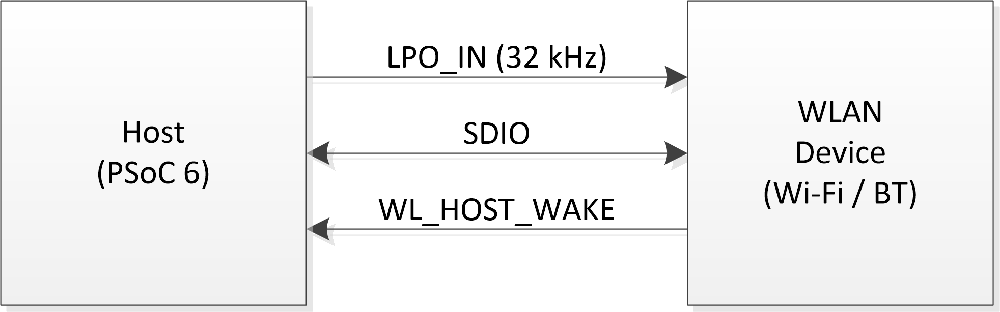
Where:
- LPO_IN (32 kHz): 32 kHz sleep clock used for low-power WLAN operation
- SDIO: clock, data
- WL_HOST_WAKE: OOB interrupt line to wake Host for service
Quick Start Guide
This Quick Start Guide demonstrates how to configure and use the WLAN_HOST_WAKE pin for the MCU Low Power feature in the Mbed OS environment. This guide also shows the feature's impact on the system's low power. The mbed-os-example-wifi is used as a base for this guide on the CY8CKIT_062S2_43012 pioneer kit. This section assumes that you have an Mbed OS development environment configured. Refer to https://os.mbed.com/getting-started/ for instructions about how to do that.
By default, the WLAN_HOST_WAKE pin is configured for Cypress boards. If you use another board you might need to modify / change the WLAN_HOST_WAKE assignment and verify it is configured properly.
Perform the following steps:
- Import the mbed-os-example-wifi example project and switch to the example directory:
mbed import mbed-os-example-wifi
cd mbed-os-example-wifi
- As a one-time operation, you might need to execute the following lines as part of enabling the CY8CKIT_062S2_43012 pioneer kit:
python -m pip install --upgrade pip
pip install mbed-ls --upgrade
mbedls -m 190B:CY8CKIT_062S2_43012
- Execute the following command in order to replace Mbed OS, download the LPA middleware, and connectivity utilities:
rm -rf mbed-os
mbed add https:
mbed add https:
mbed add https:
mbed add https:
mbed deploy
- Modify the example for your Wi-Fi SSID parameters:
- Modify mbed_app.json to update "wifi-ssid" and "wifi-password" values as desired:
...
"wifi-ssid": {
"help": "WiFi SSID",
"value": "\"SSID\""
},
"wifi-password": {
"help": "WiFi Password",
"value": "\"PASSWORD\""
}
...
- Optional: modify main.cpp to update Wi-Fi security settings:
int ret = wifi->connect(MBED_CONF_APP_WIFI_SSID, MBED_CONF_APP_WIFI_PASSWORD, NSAPI_SECURITY_WPA_WPA2);
NSAPI_SECURITY_NONE
NSAPI_SECURITY_WEP
NSAPI_SECURITY_WPA
NSAPI_SECURITY_WPA2
NSAPI_SECURITY_WPA_WPA2
- Modify main.cpp to go to deep-sleep after connecting to the Wi-Fi Access Point. MBED uses LWIP as the network stack. LWIP has periodic timers (smallest timer ~100ms), which wake up the Host MCU periodically. Do the following to suspend these timers. This is needed to demonstrate/verify that WLAN_HOST_WAKE pin is properly configured, and that the Host MCU does not wake up from any other reason other than OOB from WLAN device due to Network activity.
- Include WhdSTAInterface.h and network_activity_handler.h:
#include "WhdSTAInterface.h"
#include "network_activity_handler.h"
- Add the following declarations:
#define INACTIVE_INTERVAL_MS (300u)
#define INACTIVE_WINDOW_MS (200u)
- Modify main.cpp to allow the host MCU to go to deep-sleep and stay in deep-sleep until woken up by an external event. For this, replace the line "wifi-\>disconnect();" with the following code:
while(true) {
wait_net_suspend(static_cast<WhdSTAInterface*>(wifi),
osWaitForever, INACTIVE_INTERVAL_MS, INACTIVE_WINDOW_MS);
}
Copy following files from lpa folder to the same folder as main.cpp,
- lpa/helpers/net_suspend/mbedos/network_activity_handler.cpp
- lpa/helpers/net_suspend/mbedos/network_activity_handler.h
These files provide functions to suspends the network stack when there is no network activity and resumes it when there is any network activity.
Build the project and program the board. The following command is example for the CY8CKIT_062S2_43012 board, using GCC_ARM as the toolchain:
mbed compile -DMBED_TICKLESS -DMBED_CPU_STATS_ENABLED --target CY8CKIT_062S2_43012 --toolchain GCC_ARM --flash --sterm
Note If you cannot program the board, make sure the board DAP-Link mode is selected. Refer to the guide of your kit of how to change the mode.
MBED_CPU_STATS_ENABLED : This helps to understand how much time MCU remained in sleep state
When the modified mbed-os-example-wifi starts, the console output lists available Wi-Fi networks. It then connects to the specified above Wi-Fi Access Point, and then the PSoC 6 MCU goes to System Deep Sleep.
Scan:
WLAN MAC Address : D4:4D:A4:A0:02:A4
WLAN Firmware : wl0: Oct 29 2019 22:00:20 version 13.10.271.215 (r723093) FWID 01-f268ebc9
WLAN CLM : API: 18.2 Data: 9.10.0 Compiler: 1.36.1 ClmImport: 1.34.1 Creation: 2019-10-29 21:50:17
WHD VERSION : v1.50.0-rc1 : v1.50.0-rc1 : GCC 7.3 : 2019-10-30 18:42:31 +0530
Network: airport_5g secured: WPA2 BSSID: 24:A2:E1:f0:50:25 RSSI: -84 Ch: 36
Network: Broadcom secured: None BSSID: 0:10:18:ee:b5:f7 RSSI: -52 Ch: 36
Network: test_2nd_cy secured: WPA2 BSSID: F8:32:E4:b0:ff:8c RSSI: -74 Ch: 36
Network: eero secured: WPA2 BSSID: F8:BB:BF:b2:2:54 RSSI: -33 Ch: 36
Network: WWD secured: WPA/WPA2 BSSID: 64:A5:C3:64:16:13 RSSI: -77 Ch: 36
Network: eero secured: WPA/WPA2 BSSID: F8:BB:BF:b1:74:b4 RSSI: -36 Ch: 36
Network: eero secured: WPA/WPA2 BSSID: F8:BB:BF:69:2b:8 RSSI: -46 Ch: 36
Network: prke-bsh5g secured: WPA/WPA2 BSSID: 44:4E:6D:45:b0:58 RSSI: -82 Ch: 36
Network: secured: Unknown BSSID: F8:BB:BF:b2:2:52 RSSI: -33 Ch: 36
Network: testap secured: None BSSID: 0:A0:50:30:81:65 RSSI: -64 Ch: 36
Network: RW1 secured: WPA2 BSSID: C8:8:73:3c:87:2c RSSI: -75 Ch: 40
Network: CYFI secured: WPA2 BSSID: B0:B8:67:3b:ac:70 RSSI: -86 Ch: 44
Network: CYFI secured: WPA2 BSSID: 80:8D:B7:69:77:30 RSSI: -70 Ch: 44
Network: CYFI_GUEST secured: None BSSID: 80:8D:B7:69:77:31 RSSI: -70 Ch: 44
Network: CYFI_ZOOM secured: WPA2 BSSID: 80:8D:B7:69:77:32 RSSI: -70 Ch: 44
15 networks available.
Connecting to SSID...
Success
MAC: d4:4d:a4:a0:02:a4
IP: 192.168.1.12
Netmask: 255.255.255.0
Gateway: 192.168.1.1
RSSI: -29
Network Stack Suspended, MCU will enter DeepSleep power mode
PSoC 6 Host is in System Deep Sleep. Only WLAN OOB can wake Host up in this situation. Check the board operation. Use a PC to connect to the same Wi-Fi Access Point as the PSoC 6 board.
Send a "ping" command to the board and observe in the serial terminal that the PSoC 6 MCU wakes up each command:
C:\>ping 192.168.1.12
Pinging 192.168.1.12 with 32 bytes of data:
Reply from 192.168.1.12: bytes=32 time=738ms TTL=255
Reply from 192.168.1.12: bytes=32 time=662ms TTL=255
Reply from 192.168.1.12: bytes=32 time=727ms TTL=255
Reply from 192.168.1.12: bytes=32 time=468ms TTL=255
Ping statistics for 192.168.1.12:
Packets: Sent = 4, Received = 4, Lost = 0 (0% loss),
Approximate round trip times in milli-seconds:
Minimum = 468ms, Maximum = 738ms, Average = 648ms
<Terminal logs >
Resuming Network Stack, Network stack was suspended for 8906ms
=====================================================
WHD Stats..
tx_total:57, rx_total:329, tx_no_mem:0, rx_no_mem:0
tx_fail:0, no_credit:0, flow_control:0
Bus Stats..
cmd52:2260, cmd53_read:1028, cmd53_write:634
cmd52_fail:0, cmd53_read_fail:0, cmd53_write_fail:0
oob_intrs:120, sdio_intrs:312, error_intrs:0, read_aborts:0
=====================================================
Network Stack Suspended, MCU will enter DeepSleep power mode
Ping traffic causes WLAN OOB periodically wakes up the host, oob_intrs displayed in the serial terminal output shows the number of WLAN OOB interrupts receieved.
Wi-Fi Address Resolution Protocol (ARP) Offload
The Address Resolution Protocol (ARP) Offload part of the Low Power Assistant is designed to improve the power consumption of your connected system by reducing the time the Host needs to stay awake due to ARP broadcast traffic. In general, the ARP Offload reduces the broadcast traffic. To enable this support, refer to the Wi-Fi Low Power Configuration Considerations section. This document describes how to enable the ARP Offload features that can be incorporated into your project from Cypress GitHub LPA Middleware.
ARP is used for mapping an Internet Protocol address (IP address; ex: 192.168.1.1)) to a physical machine address (MAC; ex: ac:32:df:14:16:07) lookup. ARP uses broadcast frames to accomplish this.
- Reduce System Deep Sleep wake-up to reduce Host Processor power consumption.
- Reduce Network traffic. If many IoT devices are in one space, the Wi-Fi bands can get congested with unnecessary broadcast traffic.
ARP broadcast traffic is normally forwarded from the Network to the Device (Wi-Fi Radio) and then to the Host (Application CPU) Network Stack. If the Host is sleeping, the Device wakes it up. Having the Device handle some of the ARP traffic will reduce the frequency that the Host sleeps/wakes up, reducing Host power consumption by staying in CPU Sleep and System Deep Sleep states longer. Having the Device handle some of the ARP requests from the Host to the network will reduce Network traffic.
The WLAN ARP Offload feature of the Low Power Assistant will help you to configure the ARP requests handling by the Device.
Awake vs. Sleeping
The ARP offload feature of the Low Power Assistant has the following basic modes:
- While the Host (Host Processor) is "Awake"
- While the Host (Host Processor) is in CPU Sleep or System Deep Sleep.
It is possible to enable and configure these modes based on the Sleep status of the Application CPU.
Host Auto Reply
Host Auto Reply is a power-saving and network traffic reduction feature. Using the ARP Offload Host Auto Reply feature, the Device will answer Host ARP Requests, without broadcasting to the Network. If a Host generated ARP Request results in a cache hit in the Device ARP cache, the Device will fabricate an ARP Response and not forward the request to the Network.
This may be useful when the Host ARP cache is cleared to disable the Host ARP table entry timers prior to entering System Deep Sleep. When the Host is woken up, if the Host ARP cache queries in its own Network Stack and results in a cache miss, the Host ARP Request will be sent to the Device. If the ARP Request results in a cache hit in the Device, the Device will respond without soliciting the network. As long as the Device ARP cache entry hasn't expired, the Device will fabricate an ARP Response to the Host, thus reducing broadcast traffic.
The ARP Agent is enabled by setting the ARP Offload Agent flag and ARP Offload Enable in the Device Configurator. The ARP Agent will store "ARP IP : MAC" combos in the Device ARP cache. The Device ARP cache is filled with IP:MAC combos when ARP Offload and ARP Agent are enabled and the Network has responded to a Host ARP Request. There is an "age out" value that you can set in the ARP Offload configuration to determine the length of time the ARP cache entry is valid. This ensures that the WLAN ARP cache is updated appropriately.
The size of the WLAN Device ARP Cache is 16. The Host Network Stack maintains an ARP cache regardless if the WLAN Device ARP Agent is turned on or not.
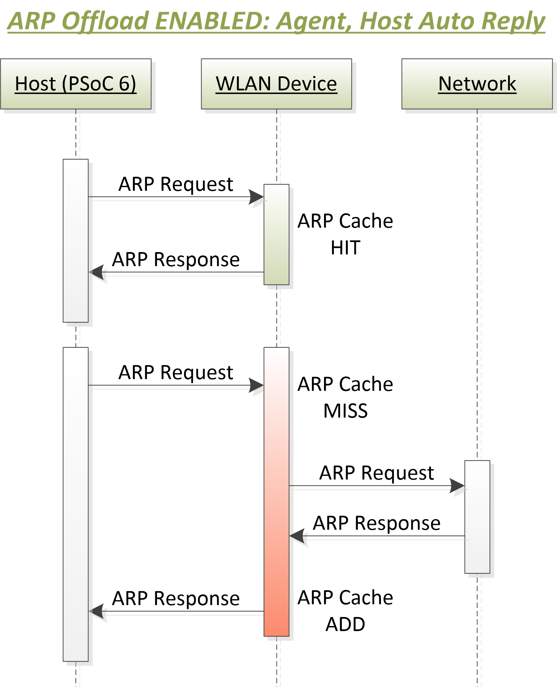
Peer Auto Reply
Peer Auto Reply is another power-saving feature so that the Device can respond to ARP requests from Peers (Network) without waking up the Host Processor.
This is accomplished by setting the ARP Offload Enable and Peer Auto Reply flags in the Device Configurator. When enabled, this feature instructs the Device to answer ARP requests to the Peers without actually asking the Host. This allows the Host to stay in CPU Sleep or System Deep Sleep longer to save power. Once the IP address of the Device is established (that is, the Device has connected to an AP and an IP has been assigned and stored in the Device), the Device will intercept any ARP request sent to the Host, and then fabricate and send an ARP response without involving the Host. If the Host was in CPU Sleep or System Deep Sleep mode, the Host is not awakened.
The max number of entries for this feature is set to 8 (defined in the Device Firmware and is not modifiable).
Host and Peer Auto Reply
Host Auto Reply and Peer Auto Reply features can be enabled together for Application CPU Awake mode.
Host IP Snoop
When enabled, the Snoop facility watches for ARP Responses from the Host to the Network, and caches them in the WLAN Device Host IP Table. The size of this table is 8 entries, which allows for the Device to support multiple IP addresses.
Quick Start Guide
This Quick Start Guide demonstrates of how to configure and use the ARP offload feature in the Mbed OS environment and its impact on the system power consumption. The mbed-os-example-wifi is used as a base for this guide on the CY8CKIT_062S2_43012 pioneer kit. This section assumes that you have an Mbed OS development environment configured. Refer to https://os.mbed.com/getting-started/ for instructions about how to do that.
The following steps are required to set up the mbed-os-example-wifi example and enable the ARP offload feature:
- Import the mbed-os-example-wifi example project and switch to the example directory:
mbed import mbed-os-example-wifi
cd mbed-os-example-wifi
- As a one-time operation, you might need to execute the following lines as part of enabling the CY8CKIT_062S2_43012 pioneer kit:
python -m pip install --upgrade pip
pip install mbed-ls --upgrade
mbedls -m 190B:CY8CKIT_062S2_43012
- Execute the following command in order to replace Mbed OS, download the LPA middleware, and connectivity utilities:
rm -rf mbed-os
mbed add https:
mbed add https:
mbed add https:
mbed add https:
mbed deploy
- Modify the example for your Wi-Fi SSID parameters:
- Modify mbed_app.json to update "wifi-ssid" and "wifi-password" values as desired:
...
"wifi-ssid": {
"help": "WiFi SSID",
"value": "\"SSID\""
},
"wifi-password": {
"help": "WiFi Password",
"value": "\"PASSWORD\""
}
...
- Optional: modify main.cpp to update Wi-Fi security settings:
int ret = wifi->connect(MBED_CONF_APP_WIFI_SSID, MBED_CONF_APP_WIFI_PASSWORD, NSAPI_SECURITY_WPA_WPA2);
NSAPI_SECURITY_NONE
NSAPI_SECURITY_WEP
NSAPI_SECURITY_WPA
NSAPI_SECURITY_WPA2
NSAPI_SECURITY_WPA_WPA2
- Modify main.cpp to go to deep-sleep after connecting to the Wi-Fi Access Point. MBED uses LWIP as the network stack. LWIP has periodic timers (smallest timer ~100ms), which wake up the Host MCU periodically. Do the following to suspend these timers, so the Host MCU can be in deep-sleep for a longer time. This is needed to demonstrate / verify ARP offload is not waking up the Host MCU.
- Include WhdSTAInterface.h and network_activity_handler.h:
#include "WhdSTAInterface.h"
#include "network_activity_handler.h"
- Add the following declarations:
#define INACTIVE_INTERVAL_MS (300u)
#define INACTIVE_WINDOW_MS (200u)
- Modify main.cpp to allow the host MCU to go to deep-sleep and stay in deep-sleep until woken up by an external event. For this, replace the line "wifi-\>disconnect();" with the following code:
while(true) {
wait_net_suspend(static_cast<WhdSTAInterface*>(wifi),
osWaitForever, INACTIVE_INTERVAL_MS, INACTIVE_WINDOW_MS);
}
Copy following files from lpa folder to the same folder as main.cpp,
- lpa/helpers/net_suspend/mbedos/network_activity_handler.cpp
- lpa/helpers/net_suspend/mbedos/network_activity_handler.h
These files provide functions to suspends the network stack when there is no network activity and resumes it when there is any network activity.
- Configure the ARP offload. The easiest way to configure ARP offload is to use the ModusToolbox Device Configurator.
- Mandatory steps to avoid design.modus file modification in mbed-os folder
- Copy folder mbed-os-example-wifi/mbed-os/targets/TARGET_Cypress/TARGET_PSOC6/TARGET_CY8CKIT_062S2_43012 to mbed-os-example-wifi folder
- Delete all files in mbed-os-example-wifi/TARGET_CY8CKIT_062S2_43012 except COMPONENT_BSP_DESIGN_MODUS folder and its contents
- Rename mbed-os-example-wifi/TARGET_CY8CKIT_062S2_43012/COMPONENT_BSP_DESIGN_MODUS to mbed-os-example-wifi/TARGET_CY8CKIT_062S2_43012/CUSTOM_BSP_DESIGN_MODUS
- Delete design.cyqspi and design.cycapsense file in mbed-os-example-wifi/TARGET_CY8CKIT_062S2_43012/CUSTOM_BSP_DESIGN_MODUS
- Add/update mbed_app.json in mbed-os-example-wifi folder with below details (This will tell mbed to ignore the BSP configuration shipped with MbedOS)
{
"target_overrides": {
"*": {
"platform.stdio-convert-newlines": true,
"target.components_remove": ["BSP_DESIGN_MODUS"]
}
}
}
- Navigate to ModusToolbox installation folder and launch the ModusToolbox Device Configurator (<install_dir>/tools_2.0/device-configurator).
- Select File->Open, navigate to the board's design.modus file, and open it: mbed-os-example-wifi/TARGET_CY8CKIT_062S2_43012/CUSTOM_BSP_DESIGN_MODUS/design.modus
- Switch to the "Pins" tab, enable P4[1] pin, specify its name as "CYBSP_WIFI_HOST_WAKE", in the "Parameters" pane change "Interrupt Trigger Type" to "Failing Edge". If you are using a different pioneer kit, refer to its guide for Host<->Device connection pinout.
- Switch to the connectivity device "CYW943012WKWBG" tab (in case the CY8CKIT_062S2_43012 board is used).
- Enable Power->Wi-Fi.
- In "Wi-Fi - Parameters" pane enable "Host Wake Configuration" and set "Host Device Interrupt Pin" to "CYBSP_WIFI_HOST_WAKE".
- Enable ARP offload.
- Set "ARP offload Feature(s)" to "Peer Auto Reply".
- Enable "Snoop Host IP From Traffic When ARP Offload Enabled".
- Set "ARP Offload Cache Entries Expire after (s)" to 1200.
- Save the configuration to generate the necessary code.
Build the project and program the board. The following command is example for the CY8CKIT_062S2_43012 board, using GCC_ARM as the toolchain:
mbed compile -DMBED_TICKLESS -DMBED_CPU_STATS_ENABLED --target CY8CKIT_062S2_43012 --toolchain GCC_ARM --flash --sterm
Note If you cannot program the board, make sure the board DAP-Link mode is selected. Refer to the guide of your kit of how to change the mode.
MBED_CPU_STATS_ENABLED : This helps to understand how much time MCU remained in sleep state
When the modified mbed-os-example-wifi starts, the console output lists available Wi-Fi networks. It then connects to the specified above Wi-Fi Access Point, and then the PSoC 6 MCU goes to System Deep Sleep.
Scan:
WLAN MAC Address : D4:4D:A4:A0:02:A4
WLAN Firmware : wl0: Oct 29 2019 22:00:20 version 13.10.271.215 (r723093) FWID 01-f268ebc9
WLAN CLM : API: 18.2 Data: 9.10.0 Compiler: 1.36.1 ClmImport: 1.34.1 Creation: 2019-10-29 21:50:17
WHD VERSION : v1.50.0-rc1 : v1.50.0-rc1 : GCC 7.3 : 2019-10-30 18:42:31 +0530
Network: airport_5g secured: WPA2 BSSID: 24:A2:E1:f0:50:25 RSSI: -84 Ch: 36
Network: Broadcom secured: None BSSID: 0:10:18:ee:b5:f7 RSSI: -52 Ch: 36
Network: test_2nd_cy secured: WPA2 BSSID: F8:32:E4:b0:ff:8c RSSI: -74 Ch: 36
Network: eero secured: WPA2 BSSID: F8:BB:BF:b2:2:54 RSSI: -33 Ch: 36
Network: WWD secured: WPA/WPA2 BSSID: 64:A5:C3:64:16:13 RSSI: -77 Ch: 36
Network: eero secured: WPA/WPA2 BSSID: F8:BB:BF:b1:74:b4 RSSI: -36 Ch: 36
Network: eero secured: WPA/WPA2 BSSID: F8:BB:BF:69:2b:8 RSSI: -46 Ch: 36
Network: prke-bsh5g secured: WPA/WPA2 BSSID: 44:4E:6D:45:b0:58 RSSI: -82 Ch: 36
Network: secured: Unknown BSSID: F8:BB:BF:b2:2:52 RSSI: -33 Ch: 36
Network: testap secured: None BSSID: 0:A0:50:30:81:65 RSSI: -64 Ch: 36
Network: RW1 secured: WPA2 BSSID: C8:8:73:3c:87:2c RSSI: -75 Ch: 40
Network: CYFI secured: WPA2 BSSID: B0:B8:67:3b:ac:70 RSSI: -86 Ch: 44
Network: CYFI secured: WPA2 BSSID: 80:8D:B7:69:77:30 RSSI: -70 Ch: 44
Network: CYFI_GUEST secured: None BSSID: 80:8D:B7:69:77:31 RSSI: -70 Ch: 44
Network: CYFI_ZOOM secured: WPA2 BSSID: 80:8D:B7:69:77:32 RSSI: -70 Ch: 44
15 networks available.
Connecting to SSID...
Success
MAC: d4:4d:a4:a0:02:a4
IP: 192.168.1.12
Netmask: 255.255.255.0
Gateway: 192.168.1.1
RSSI: -29
Network Stack Suspended, MCU will enter DeepSleep power mode
- Check the board operation. Use a PC to connect to the same Wi-Fi Access Point as the PSoC 6 board.
- Send a "ping" command to the board and observe in the serial terminal that the PSoC 6 MCU wakes up each command:
C:\>ping 192.168.1.12
Pinging 192.168.1.12 with 32 bytes of data:
Reply from 192.168.1.12: bytes=32 time=738ms TTL=255
Reply from 192.168.1.12: bytes=32 time=662ms TTL=255
Reply from 192.168.1.12: bytes=32 time=727ms TTL=255
Reply from 192.168.1.12: bytes=32 time=468ms TTL=255
Ping statistics for 192.168.1.12:
Packets: Sent = 4, Received = 4, Lost = 0 (0% loss),
Approximate round trip times in milli-seconds:
Minimum = 468ms, Maximum = 738ms, Average = 648ms
<Terminal logs >
Resuming Network Stack, Network stack was suspended for 8906ms
=====================================================
WHD Stats..
tx_total:57, rx_total:329, tx_no_mem:0, rx_no_mem:0
tx_fail:0, no_credit:0, flow_control:0
Bus Stats..
cmd52:2260, cmd53_read:1028, cmd53_write:634
cmd52_fail:0, cmd53_read_fail:0, cmd53_write_fail:0
oob_intrs:120, sdio_intrs:312, error_intrs:0, read_aborts:0
=====================================================
Network Stack Suspended, MCU will enter DeepSleep power mode
Send an "arping" command as follows and observe that the PSoC 6 MCU is in Deep Sleep mode.
C:\>arp-ping.exe 192.168.1.12
Reply that D4:4D:A4:A0:02:A4 is 192.168.1.12 in 1124.833ms
Reply that D4:4D:A4:A0:02:A4 is 192.168.1.12 in 121.340ms
Reply that D4:4D:A4:A0:02:A4 is 192.168.1.12 in 1122.989ms
Reply that D4:4D:A4:A0:02:A4 is 192.168.1.12 in 1119.256ms
Ping statistics for 192.168.1.12/arp
4 probes sent.
4 successful, 0 failed.
Approximate trip times in milli-seconds:
Minimum = 121.340ms, Maximum = 1124.833ms, Average = 872.105ms
Use any available ARPping tool. As an example:
Since the WLAN device’s ARP cache is empty on the initial ARP request from the peer, it looks up the IP details from the host and updates its ARP cache. This causes the host to wake up because of network activity between the host MCU and the WLAN device. On subsequent ARP requests from the peer, the host remains asleep. The WLAN device continues to respond to the ARP request as it has the ARP data available in its ARP cache.
Verify the ARP offload is working as desired. Refer to the How to Measure Power Consumption section for corresponding instructions. The following oscilloscope screen capture shows current measurement with the ARP offload enabled:
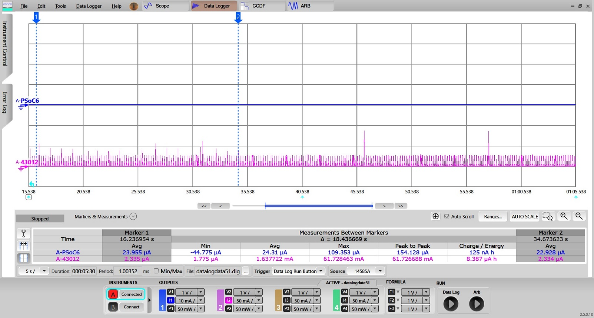
While the WLAN device (purple graph) responds to each request, the PSoC 6 host (blue graph) is in System Deep Sleep mode.
Disable the ARP Offload feature and observe that the PSoC 6 Host wakes up on each request. Launch the ModusToolbox Device Configurator and open the appropriate design.modus file. Select the "CYW943012WKWBG" tab, select Power->Wi-Fi personality, and disable ARP offload by de-selecting the check box next to "ARP offload". Save the configuration. Then, build and program the application. With ARP offload disabled, the Host MCU (PSoC 6) will wake for every ARP request, as shown in the following power profile.
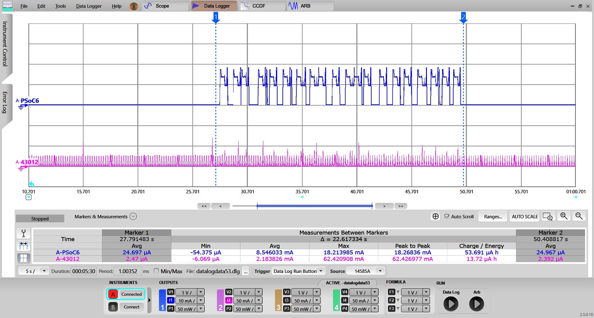
Wi-Fi Packet Filter Offload
Packet filters allow the host processor to limit which types of packets get passed up to the host processor from the WLAN subsystem. This is useful to keep out unwanted / unneeded packets from the network that might otherwise wake the host out of a power-saving System Deep Sleep mode or prevent it from entering System Deep Sleep mode.
Packet filters are useful when:
- Trying to keep the host processor in System Deep Sleep for as long as possible.
- Trying to get the host processor into System Deep Sleep as soon as possible.
Whenever a WLAN packet is destined for the host, the WLAN processor must awaken the host (if it is asleep) so it can retrieve the packet for processing. Often times the host network stack processes the packet only to discover that the packet should be thrown away, because it is not needed. For example, it is destined for a port or service that is being used. Packet filters allow these types of packets to be filtered and discarded by the WLAN processor so the host is not interrupted.
Filter Types
The following types of packet filters are supported, based on a standard IP Stack:
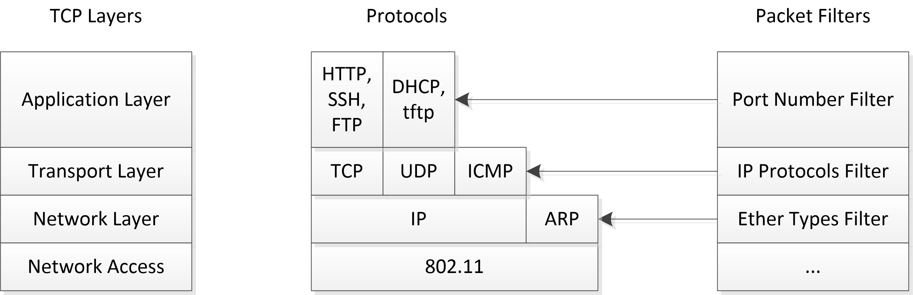
A general purpose STA might want these types of packets:
- Ether type ARP
- IP protocol ICMP
- TCP port 22 (ssh)
- UDP port 68 (DHCP)
Other packet types are highly dependent on what applications and data types are in use. Multiple filters may be configured to operate simultaneously.
Network Layer / Ether Types
The EtherType filter is based on a 16-bit ethertype field present in ethernet packets, and it is the lowest level of the TC/IP stack. A technical description and list of choices can be found in numerous places, such as Ether Type.
The most commonly used protocols (and most useful filters) are:
- IP (value 0x800)
- ARP (value 0x806).
Filtering on IP would match any and all IP packets coming from the network. This is a very coarsely grained filter and it will include all ICMP, TCP, and UDP packets as shown in the diagram above. Filtering on ARP is finer grained, and it will only match on ARP packets. Filtering all IP will have an enormous impact due to the large number of packets it will match and is generally not recommended for general usage.
Valid EtherType filters consist of a 16-bit number greater than or equal to 0x800.
Transport Layer / IP Protocols
The next layer up the stack is the Transport layer, which consists of various IP protocols such as TCP, UDP, and ICMP. Discussions of the protocols themselves are outside the realm of this document, but are widely available. A list of protocol numbers is also widely available, including: IP Protocol Numbers.
IP Protocol filters consist of a single 8-bit number. No checking is done to see if this number matches a well-known protocol since it is possible for vendors to use proprietary numbers and protocols.
Filtering on one IP protocol will only match that protocol. For example, filtering on UDP would match a UDP packet, but not ICMP or TCP packets. However, matching on TCP is still very coarsely grained and will likely include the majority of packets destined for the host processor (depending on your environment). Port numbers are the next level of filter refinement.
Applications Layer / TCP & UDP Port Numbers
The applications layer distinguishes between various applications based on Port numbers. These are simply well-known numbers used to identify various TCP and UDP based applications. Technical discussions about port numbers and list of numbers that belong to which applications can be found widely on the internet, for example: TCP and UDP Port Numbers.
Port filters are 16-bit port numbers as described above. With a port number filter, you can filter on, for example, only ssh packets (port 22), only on ftp packets (port 20), or any other of the many applications listed above.
Due to the large number and constantly changing port definitions, the OLM makes no attempt to sanity check these values.
IP packets have both source and destination ports. Destination ports are the well-known port numbers described in the link above and generally the most useful. Source ports describe the temporary, ephemeral port numbers used by the host sending the packets. These are generated on the fly and not well known. Since they are not known ahead of time, creating a filter for them is difficult. Port ranges can be used to match a wide range of source ports to cover this case.
Port filters support optional port ranges. A port range describes a start and end such that any port number within that start-end range will match. This is most useful for matching a short-lived ephemeral source port number since it will not be known ahead of time.
Since both TCP and UDP use port numbers, filters are configured to match one or the other (TCP or UDP). If both TCP and UDP need to be filtered for a particular port, two filters can be created; one for each.
Action (Keep vs Toss)
Filters can be configured to either Keep (send to host) or Toss (drop / discard). When configured to drop, only the specified packets are dropped, while any others not specifically filtered are passed to the host. Likewise, when configured to keep packets, only the specified packets are passed to the host and the rest discarded. The most helpful model is to use only 'keep' filters. In other words, use 'keep' filters to specify the complete list of packet types the host is interested in, and discard the rest. This works because (usually) it is much simpler to list the packets the host wants to receive versus creating a complete list of packets it doesn't want.
When using keep filters, use care to allow enough packets through for networking protocols to work properly. For instance, the processor must be able to join a network, get a DHCP address, respond to ARP requests, and possibly share network keys. Not creating enough keep filters to allow all these type of packets through will prevent the host from joining the network. A reasonable minimal set of keep filters includes:
- pf_add 1 ARP keep #Allow ARP through
- pf_add 2 802_1X keep #Allow security packets through
- pf_add 3 68 dest UDP keep #Allow DHCP packets through.
These additional filters might also be needed depending on your application:
- pf_add 4 53 source UDP keep #Allow DNS packet (use source port)
- pf_add 5 8883 dest TCP keep #Allow Secure MQTT packets
- pf_add 6 1883 dest TCP keep #Allow Open MQTT packets
These 'keep' filters will keep only the packet types as described; all other traffic will be discarded so it is critical to use enough filters to allow your application to receive the traffic it needs. This type of configuration is useful when your system receives many different kinds of traffic and it is easier to describe the traffic to be kept rather than the traffic to be discarded.
Alternatively, it is often simpler to describe the specific type of traffic to be discarded and keeping everything else. For example, someone on the network keeps pinging your machine (using ICMP packets) and waking it. You'd like to block ICMP and keep everything else. In this case, just one filter is needed:
This will discard all incoming ping/ICMP packets and keep all other traffic.
There are no minimal filters for toss filters because the system will filter the specific packets and everything else gets passed up to the host.
Note All active filters need to be of the same type (keep or toss). Mixing active keep and toss filters will cause unexpected behaviors.
When Active (Sleep vs Wake)
Filters can be configured to be active either when the host processor is active or asleep, or both. When a filter is not active, it has no effect. When the system goes into sleep mode, it disables all wake filters and enables all sleep filters just before entering sleep. When waking, all sleep filters are disabled and wake filters enabled.
- Wake filters allow the host to go into sleep mode faster.
- Sleep filters help the host stay asleep longer.
Normally, without packet filters, the WLAN subsystem passes all packets destined for the host up to the host network stack for processing. If the host is in System Deep Sleep, the WLAN subsystem will first wake the host and then pass the packet up to the stack. From there, the network stack will pass the packet on to the application that is listening for that type of packet. If no applications are listening for that type of packet, the network stack drops the packet.
For instance:
- An http packet arrives on port 80, but there is no http server running that would read the packet (port 80 is default http port).
- An ssh packet arrives on port 22, but there is no ssh server running that would read that packet (port 22 is default ssh port).
In both cases, the host would awake from its battery saving System Deep Sleep just to drop a packet. It is not hard to imagine scenarios where traffic your application doesn't want or doesn't care about ends up penalizing your battery usage by constantly waking the host from System Deep Sleep. Alternatively, these unwanted packets can also prevent the host from entering System Deep Sleep in the first place. The host has an idle sleep threshold. When the host has been idle longer than that threshold, it will put itself to sleep. Processing unwanted packets (even just dropping them) will cause the host to come out of idle and prevent it from reaching the idle sleep threshold, preventing the host from entering sleep. In both cases, traffic patterns keep the processor awake, burning power.
Quick Start Guide
This Quick Start Guide demonstrates of how to configure and use the Packet Filter feature in the Mbed OS environment and its impact on the system power consumption. The mbed-os-example-wifi is used as a base for this guide on the CY8CKIT_062S2_43012 pioneer kit. This section assumes that a user has an Mbed OS development environment configured. Refer to https://os.mbed.com/getting-started/ to setup Mbed OS develop environment.
The following steps are required to setup the mbed-os-example-wifi example with enabling the Packet Filter feature:
- Import the mbed-os-example-wifi example project and switch to the example directory:
mbed import mbed-os-example-wifi
cd mbed-os-example-wifi
- As a one-time operation, you might need to execute the following lines as part of enabling the CY8CKIT_062S2_43012 pioneer kit:
python -m pip install --upgrade pip
pip install mbed-ls --upgrade
mbedls -m 190B:CY8CKIT_062S2_43012
- Execute the following command in order to replace Mbed OS, download the LPA middleware, and connectivity utilities:
rm -rf mbed-os
mbed add https:
mbed add https:
mbed add https:
mbed add https:
mbed deploy
- Modify the example for your Wi-Fi SSID parameters:
- Modify mbed_app.json to update "wifi-ssid" and "wifi-password" values as desired:
...
"wifi-ssid": {
"help": "WiFi SSID",
"value": "\"SSID\""
},
"wifi-password": {
"help": "WiFi Password",
"value": "\"PASSWORD\""
}
...
- Optional: modify main.cpp to update Wi-Fi security settings:
int ret = wifi->connect(MBED_CONF_APP_WIFI_SSID, MBED_CONF_APP_WIFI_PASSWORD, NSAPI_SECURITY_WPA_WPA2);
NSAPI_SECURITY_NONE
NSAPI_SECURITY_WEP
NSAPI_SECURITY_WPA
NSAPI_SECURITY_WPA2
NSAPI_SECURITY_WPA_WPA2
- Modify main.cpp to go to deep-sleep after connecting to the Wi-Fi Access Point. MBED uses LWIP as the network stack. LWIP has periodic timers (smallest timer ~100ms), which wake up the Host MCU periodically. Do the following to suspend these timers, so the Host MCU can be in deep-sleep for a longer time. This is needed to demonstrate / verify Packet Filter(s) are not waking up the Host MCU.
- Include WhdSTAInterface.h and network_activity_handler.h:
#include "WhdSTAInterface.h"
#include "network_activity_handler.h"
- Add the following declarations:
#define INACTIVE_INTERVAL_MS (300u)
#define INACTIVE_WINDOW_MS (200u)
- Modify main.cpp to allow the host MCU to go to deep-sleep and stay in deep-sleep until woken up by an external event. For this, replace the line "wifi-\>disconnect();" with the following code:
while(true) {
wait_net_suspend(static_cast<WhdSTAInterface*>(wifi),
osWaitForever, INACTIVE_INTERVAL_MS, INACTIVE_WINDOW_MS);
}
Copy following files from lpa folder to the same folder as main.cpp,
- lpa/helpers/net_suspend/mbedos/network_activity_handler.cpp
- lpa/helpers/net_suspend/mbedos/network_activity_handler.h
These files provide functions to suspends the network stack when there is no network activity and resumes it when there is any network activity.
- Configure Packet Filters, the preferred way to is to use ModusToolbox IDE.
- Mandatory steps to avoid design.modus file modification in mbed-os folder
- Copy folder mbed-os-example-wifi/mbed-os/targets/TARGET_Cypress/TARGET_PSOC6/TARGET_CY8CKIT_062S2_43012 to mbed-os-example-wifi folder
- Delete all files in mbed-os-example-wifi/TARGET_CY8CKIT_062S2_43012 except COMPONENT_BSP_DESIGN_MODUS folder and its contents
- Rename mbed-os-example-wifi/TARGET_CY8CKIT_062S2_43012/COMPONENT_BSP_DESIGN_MODUS to mbed-os-example-wifi/TARGET_CY8CKIT_062S2_43012/CUSTOM_BSP_DESIGN_MODUS
- Delete design.cyqspi and design.cycapsense file in mbed-os-example-wifi/TARGET_CY8CKIT_062S2_43012/CUSTOM_BSP_DESIGN_MODUS
- Add/update mbed_app.json in mbed-os-example-wifi folder with below details (This will tell mbed to ignore the BSP configuration shipped with MbedOS)
{
"target_overrides": {
"*": {
"platform.stdio-convert-newlines": true,
"target.components_remove": ["BSP_DESIGN_MODUS"]
}
}
}
- Navigate to ModusToolbox installation folder and launch the ModusToolbox Device Configurator (<install_dir>/tools_2.0/device-configurator).
- Select File->Open, navigate to the board's design.modus file, and open it: mbed-os-example-wifi/TARGET_CY8CKIT_062S2_43012/CUSTOM_BSP_DESIGN_MODUS/design.modus
- Switch to the "Pins" tab, enable P4[1] pin, specify its name as "CYBSP_WIFI_HOST_WAKE", in the "Parameters" pane change "Interrupt Trigger Type" to "Failing Edge". If you are using a different pioneer kit, refer to its guide for Host<->Device connection pinout.
- Switch to the connectivity device "CYW943012WKWBG" tab (in case the CY8CKIT_062S2_43012 board is used).
- Enable Power->Wi-Fi.
- In "Wi-Fi - Parameters" pane enable "Host Wake Configuration" and set "Host Device Interrupt Pin" to "CYBSP_WIFI_HOST_WAKE".
- Disable ARP offload.
- Enable "Add minimal set of keep filters", these filters allow ARP, DNS, DHCP and 802.11x security packets to wake up the Host, and are needed to connect to WiFi Access point, any other WiFi packets are dropped by WLAN chip and not forwarded to the Host MCU (PSoC6)
- Save the configuration to generate the necessary code.
Build the project and program the board. The following command is example for the CY8CKIT_062S2_43012 board, using GCC_ARM as the toolchain:
mbed compile -DMBED_TICKLESS -DMBED_CPU_STATS_ENABLED --target CY8CKIT_062S2_43012 --toolchain GCC_ARM --flash --sterm
Note If you cannot program the board, make sure the board DAP-Link mode is selected. Refer to the guide of your kit of how to change the mode.
MBED_CPU_STATS_ENABLED : This helps to understand how much time MCU remained in sleep state
When the modified mbed-os-example-wifi starts, the console output lists available Wi-Fi networks. It then connects to the specified above Wi-Fi Access Point, and then the PSoC 6 MCU goes to System Deep Sleep.
Scan:
WLAN MAC Address : D4:4D:A4:A0:02:A4
WLAN Firmware : wl0: Oct 29 2019 22:00:20 version 13.10.271.215 (r723093) FWID 01-f268ebc9
WLAN CLM : API: 18.2 Data: 9.10.0 Compiler: 1.36.1 ClmImport: 1.34.1 Creation: 2019-10-29 21:50:17
WHD VERSION : v1.50.0-rc1 : v1.50.0-rc1 : GCC 7.3 : 2019-10-30 18:42:31 +0530
Network: airport_5g secured: WPA2 BSSID: 24:A2:E1:f0:50:25 RSSI: -84 Ch: 36
Network: Broadcom secured: None BSSID: 0:10:18:ee:b5:f7 RSSI: -52 Ch: 36
Network: test_2nd_cy secured: WPA2 BSSID: F8:32:E4:b0:ff:8c RSSI: -74 Ch: 36
Network: eero secured: WPA2 BSSID: F8:BB:BF:b2:2:54 RSSI: -33 Ch: 36
Network: WWD secured: WPA/WPA2 BSSID: 64:A5:C3:64:16:13 RSSI: -77 Ch: 36
Network: eero secured: WPA/WPA2 BSSID: F8:BB:BF:b1:74:b4 RSSI: -36 Ch: 36
Network: eero secured: WPA/WPA2 BSSID: F8:BB:BF:69:2b:8 RSSI: -46 Ch: 36
Network: prke-bsh5g secured: WPA/WPA2 BSSID: 44:4E:6D:45:b0:58 RSSI: -82 Ch: 36
Network: secured: Unknown BSSID: F8:BB:BF:b2:2:52 RSSI: -33 Ch: 36
Network: testap secured: None BSSID: 0:A0:50:30:81:65 RSSI: -64 Ch: 36
Network: RW1 secured: WPA2 BSSID: C8:8:73:3c:87:2c RSSI: -75 Ch: 40
Network: CYFI secured: WPA2 BSSID: B0:B8:67:3b:ac:70 RSSI: -86 Ch: 44
Network: CYFI secured: WPA2 BSSID: 80:8D:B7:69:77:30 RSSI: -70 Ch: 44
Network: CYFI_GUEST secured: None BSSID: 80:8D:B7:69:77:31 RSSI: -70 Ch: 44
Network: CYFI_ZOOM secured: WPA2 BSSID: 80:8D:B7:69:77:32 RSSI: -70 Ch: 44
15 networks available.
Connecting to SSID...
Success
MAC: d4:4d:a4:a0:02:a4
IP: 192.168.1.12
Netmask: 255.255.255.0
Gateway: 192.168.1.1
RSSI: -29
Network Stack Suspended, MCU will enter DeepSleep power mode
- Check the board operation. Use a PC to connect to the same Wi-Fi Access Point as the PSoC 6 board.
- Send "ping" command to the board and observe in serial terminal that it does not wake up the PSoC 6 device since there is no "keep" packet filter for ICMP pings, there is no response for the pings:
C:\>ping 192.168.1.12
Pinging 192.168.1.12 with 32 bytes of data:
Request timed out.
Request timed out.
Ping statistics for 192.168.1.12:
Packets: Sent = 2, Received = 0, Lost = 2 (100% loss),
- Send an "arping" command as follows and observe that the PSoC 6 MCU is in Deep Sleep mode. Use any available ARPping tool. As an example:
C:\>arp-ping.exe 192.168.1.12
Reply that D4:4D:A4:A0:02:A4 is 192.168.1.12 in 1127.934ms
Reply that D4:4D:A4:A0:02:A4 is 192.168.1.12 in 1116.976ms
Reply that D4:4D:A4:A0:02:A4 is 192.168.1.12 in 1124.160ms
Reply that D4:4D:A4:A0:02:A4 is 192.168.1.12 in 1119.439ms
Ping statistics for 192.168.1.12/arp
4 probes sent.
4 successful, 0 failed.
Approximate trip times in milli-seconds:
Minimum = 1116.976ms, Maximum = 1127.934ms, Average = 1122.127ms
Observe that PSoC 6 device wakes up each command since there is "keep" packet filter for ARP pings, the ARP pings are responded back:
Resuming Network Stack, Network stack was suspended for 396ms
=====================================================
WHD Stats..
tx_total:51, rx_total:405, tx_no_mem:0, rx_no_mem:0
tx_fail:0, no_credit:0, flow_control:0
Bus Stats..
cmd52:4525, cmd53_read:3086, cmd53_write:1064
cmd52_fail:0, cmd53_read_fail:0, cmd53_write_fail:0
oob_intrs:611, sdio_intrs:2067, error_intrs:0, read_aborts:0
=====================================================
Network Stack Suspended, MCU will enter DeepSleep power mode
Verify the packet Filter is working as desired. Refer to the How to Measure Power Consumption section for corresponding instructions. The following oscilloscope screen capture shows current measurement with the Packet Filter enabled
i. ARP Ping : This wakes up the host as packet filter for ARP is configured
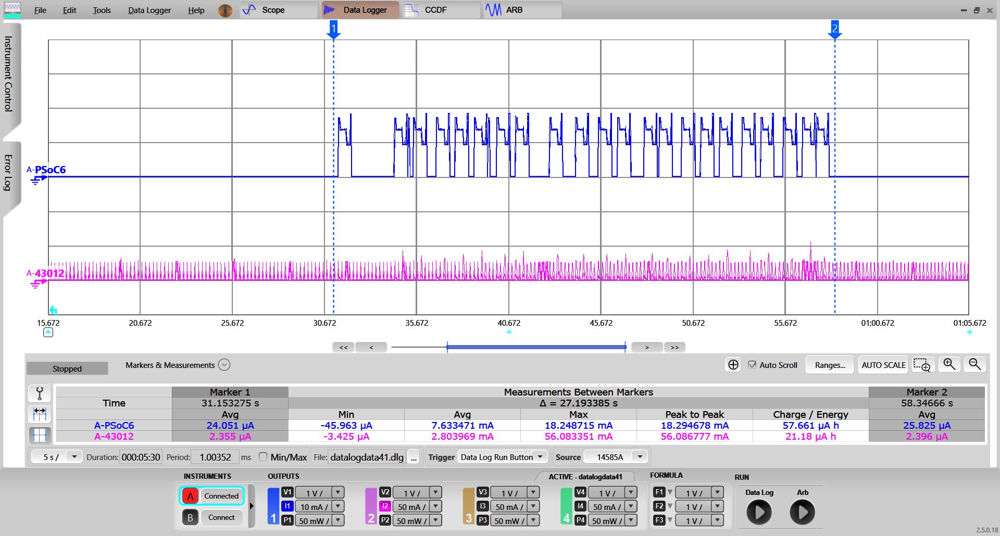
ii. Ping : This doesnot wakeup the host as ICMP packet is not configured as packet filter type
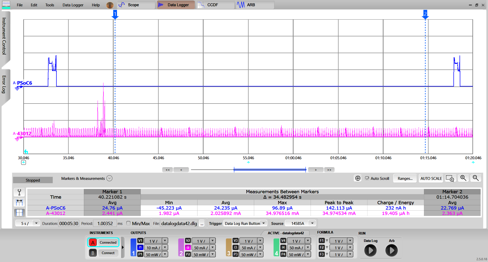
Wi-Fi Low Power Configuration Considerations
The following are the different flows to configure LPA middleware:
- ModusToolbox Device Configurator Flow. Generating the initialization code using the ModusToolbox Device Configurator greatly simplifies configuring the PSoC and enabling the LPA features. The ModusToolbox Device Configurator provides the user interface to set up and automatically generate the initialization code (including analog routing) and configuration structures.
- Manual Configuration Flow. Manually adding settings into configuration files. Manual implementation of the initialization code (including analog routing) and configuration structures is recommended for expert Users only.
Note If you modify the output of the ModusToolbox Device Configurator, you cannot import it back to the tool.
ModusToolbox Device Configurator Flow
To open the ModusToolbox Device Configurator, right-click on the project in the Project Explorer pane in the ModusToolbox IDE, and select ModusToolbox Configurators > Device Configurator.
- Select the Wi-Fi Radio device tab (e.g., CYW4343WKUBG).
- Enable the Wi-Fi personality and go to the Wi-Fi Parameters pane to configure the LPA Middleware.
- Set Host Wake Configuration. Enable and assign the Host Device Interrupt Pin. Refer to the kit datasheet to find out which pin is routed on board PCB.
- Set ARP Offload. Enable and configure the LPA with the desired parameters.
- Set AWS MQTT Filters. Enable MQTT TLS Filter to enable corresponding filter.
- Configure MQTT TLS Filter Configuration parameters with desired values.
- Set Packet Filters. Enable Filter Configuration <N> to get access to the filter parameters.
- Configure the enabled filter on the previous step with desired parameters.
- Perform File->Save to generate initialization code.
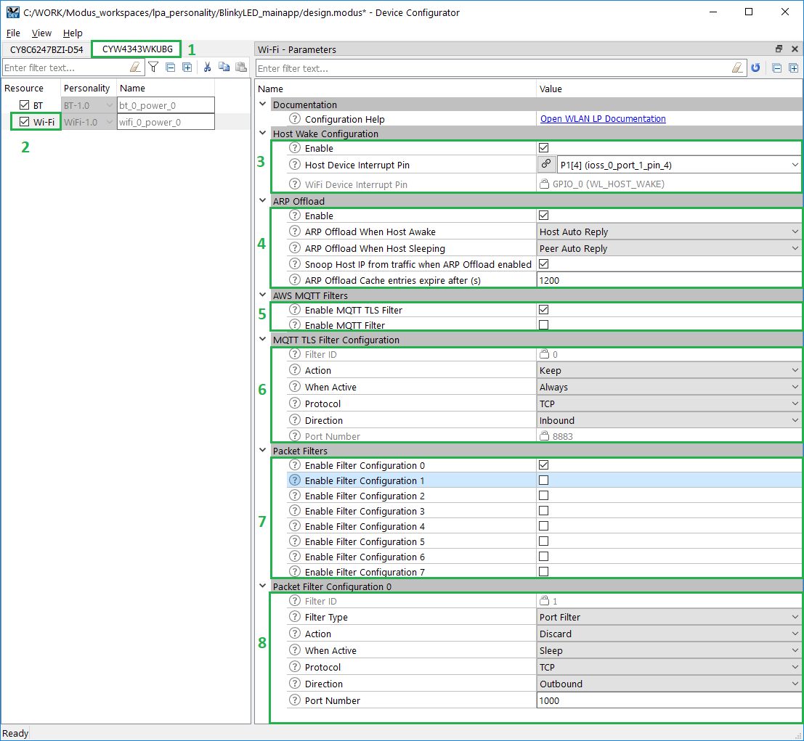
After saving the configuration file, the generated code is available under the GeneratedSource folder, located next to the design.modus file in the BSP:
- C Data File: /GeneratedSource/cycfg_connectivity_wifi.c
- C Header File: /GeneratedSource/cycfg_connectivity_wifi.h
Manual Configuration Flow
Manual implementation of the initialization code (including analog routing) and configuration structures is recommended for expert Users only.
Limitations
- The maximum number of filters is ultimately dictated by free memory on the Wi-Fi chipset. More memory will allow more filters. Different Wi-Fi chips running FW from different branches will likely have slightly different maximum numbers of filters. It is possible to add 20 filters on a CY8CKIT_062S2_43012 kit without any issue.
- Network stack suspend/resume functionality which is called in main.cpp function which enables Host MCU to remain in deep sleep for more duration (wake up only for external event) has a 32-Bit LP-Ticker support limitation in MbedOS (Maximum sleep-time possible is 36 hours(1.5 days). This means Host MCU will wake up without interrupt from external event after 36 hrs and then immediately goes back to sleep. This has very less power impact.
Configuration Parameters
The following parameters and their mapping to macros are available:
| Category | Parameter | Description | Parameter values |
| Host Wake Configuration | Host Device Interrupt Pin | Selects the host pin which is connected to Wi-Fi device's HOST WAKE signal. |
- Empty (default)
- Any enabled pin from Pin tab
|
| Host Wake Configuration | Wi-Fi Device Interrupt Pin | Wi-Fi device GPIO_0 is reserved as device wake-up interrupt request pin (WL HOST WAKE). |
|
| ARP Offload | ARP Offload When Host Awake | Respond to ARP Requests when Awake. |
- Disabled (default)
- Host Auto Reply
- Peer Auto Reply
- Host and Peer Auto Reply
|
| ARP Offload | ARP Offload When Host Sleeping | Respond to ARP Requests when Sleeping. |
- Disabled (default)
- Peer Auto Reply
|
| ARP Offload | Snoop Host IP from traffic when ARP Offload enabled | The host IP address is snooped from an ARP Request. If disabled, the WLAN Device will need to be informed of the Host IP address when the network interface is configured (statically or dynamically via DHCP). |
|
| ARP Offload | ARP Offload Cache entries expire after (s) | When the ARP cache table is offloaded from the host to the device, table entries are subject to an aging value called "peer age". |
- 1200 (default)
- 1-4294967295
|
| MQTT Filter Configuration | Filter ID | Filter ID |
- 0 (for MQTT Filter)
- 1 (for MQTT TLS Filter)
|
| MQTT Filter Configuration | Action | Filter can either pass up packets that match the filter to the host (Keep) or drop them so the host never gets them (Discard). |
|
| MQTT Filter Configuration | When Active | Defines when the filter is active, when the host is awake, when it goes to sleep, or both. |
- Sleep (default)
- Wake
- Always
|
| MQTT Filter Configuration | Protocol | Choose communication protocol. |
|
| MQTT Filter Configuration | Direction | Inbound - destination port, outbound - source port. |
- Destination Port (default)
- Source Port
|
| MQTT Filter Configuration | Port Number | Either the single port to be filtered or the beginning of the block of contiguous numbers. When using a block, the starting port must be power of 2. |
- 8883 for TLS
- 1883 for Non TLS
|
| Packet Filter Configuration <N> | Filter ID | Filter ID |
|
| Packet Filter Configuration <N> | Filter Type | Each port filter can specify either a single port or a block of port numbers.
- Port Filter on a 16 bit UDP or TCP port number. Refer to Filter Types for details of port numbers.
- Port Block Filter of port numbers (vs a single port). Envisioned to be used by short lived ephemeral ports on source port.
- Ether Type accepts a 16 bit ethertype value to filter on. Refer to the Filter Types section (EtherTypes). Common values are 0x800 (IP) and 0x806 (ARP).
- IP Type accepts an 8 bit IP Protocol number to filter on. Refer to the Filter Types section (IPProtocols).
|
- Port Filter
- Port Block Filter
- Ether Type
- IP Type
|
| Packet Filter Configuration <N> | Action | Filter can either pass up packets that match the filter to the host (Keep) or drop them so the host never gets them (Discard). |
|
| Packet Filter Configuration <N> | When Active | Defines when the filter is active, when the host is awake, when it goes to sleep, or both. |
- Sleep (default)
- Wake
- Always
|
| Packet Filter Configuration <N> | Protocol | Chooses communication protocol. Filter can be constrained to either TCP or UDP. To match either TCP or UDP use two filters, one for each. |
|
| Packet Filter Configuration <N> | Direction | Inbound - destination port, outbound - source port. Packets have both a source and destination port. This specifies which one to use. A single port usually uses the destination port. |
- Destination Port (default)
- Source Port
|
| Packet Filter Configuration <N> | Port Number | Either the single port to be filtered or the beginning of the block of contiguous numbers. When using a block, the starting port must be a power of 2. |
- 1024 for Packet filter (default)
- 0-65535
|
| Packet Filter Configuration <N> | Range | Indicates the size of the block of port numbers, must be of the form (2^y - 1) and less than Port Number (Filter Type = Port Filter Block). 0 indicates just a single port. |
|
| Packet Filter Configuration <N> | Ether Type | Enter EtherType value for desired protocol (Filter Type = Ether Type). |
|
| Packet Filter Configuration <N> | IP protocol | Enter desired IP protocol number (Filter Type = IP Type). |
|
Part 3. Bluetooth Low Power
The Bluetooth low-power feature enables the host to achieve its lowest power consumption with enabled Bluetooth. The BT Low Power personality helps configure the pin connections between the MCU host and BT device.
With proper configuration, it is possible to achieve low-power consumption by enabling the host MCU and BT device to enter the System Deep Sleep mode. The GPIO connection specified in the BT LPA personality should match the connections present on the target board. In most cases, the target board BSP settings have the GPIO properly set. So, change it only if the hardware is being modified. The goal of the BT LPA is to make the pin setup easier using a portable configuration layer.
Refer to the BT Low Power Configuration Considerations section to configure the WAKE pins. The following diagram shows connections between the Host and WLAN device.
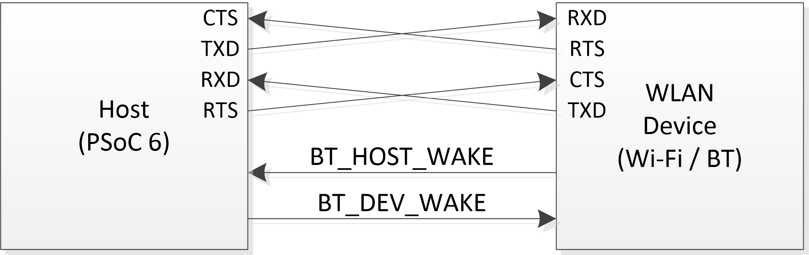
Where:
- UART: (CTS / TXD / RXD / RTS)
- BT_HOST_WAKE (host wake): MCU input pin which can wake the MCU with interrupt.
- BT_DEV_WAKE (device wake): an output MCU host pin which is connected as input BT device pin which interrupts the BT device when set in active state.
Another use case for the BT LPA personality is to disable low-power mode, even though all the pins are properly connected and configured. In this case, the BT LPA personality should specify Low Power, but leave the Pins unconnected in the personality. This results in Low Power being disabled.
Quick Start Guide
This Quick Start Guide demonstrates configuring and using the BT Low Power feature in the Mbed OS environment, as well as its impact on the system low power. As a base for this guide, the mbed-os-example-ble-Beacon example is used. This section assumes that you have an Mbed OS development environment configured. Refer to https://os.mbed.com/getting-started/ for instructions about how to do that.
Steps to create the mbed-os-example-ble-Beacon application and configure the BT low power feature.
- Import the mbed-os-example-wifi example project and switch to the example directory:
mbed import http:
cd mbed-os-example-ble-Beacon
- As a one-time operation, you might need to execute the following lines as part of enabling the CY8CKIT_062S2_43012 pioneer kit:
python -m pip install --upgrade pip
pip install mbed-ls --upgrade
mbedls -m 190B:CY8CKIT_062S2_43012
- Execute the following command in order to replace Mbed OS, download the LPA middleware, and connectivity utilities:
rm -rf mbed-os
mbed add https:
mbed add https:
mbed add https:
mbed add https:
mbed deploy
Build the project and program the board. The Cypress Board's BT Powersave is configured and enabled by default. The following command is example for the CY8CKIT_062S2_43012 board, using GCC_ARM as the toolchain:
mbed compile -DMBED_TICKLESS --target CY8CKIT_062S2_43012 --toolchain GCC_ARM --flash
Note If you cannot program the board, make sure the board DAP-Link mode is selected. Refer to the guide of your kit of how to change the mode.
Check the board operation. Refer to the How to Measure Power Consumption section for corresponding instructions. Following images show current measurement
i. Current measurement when BT is not associated
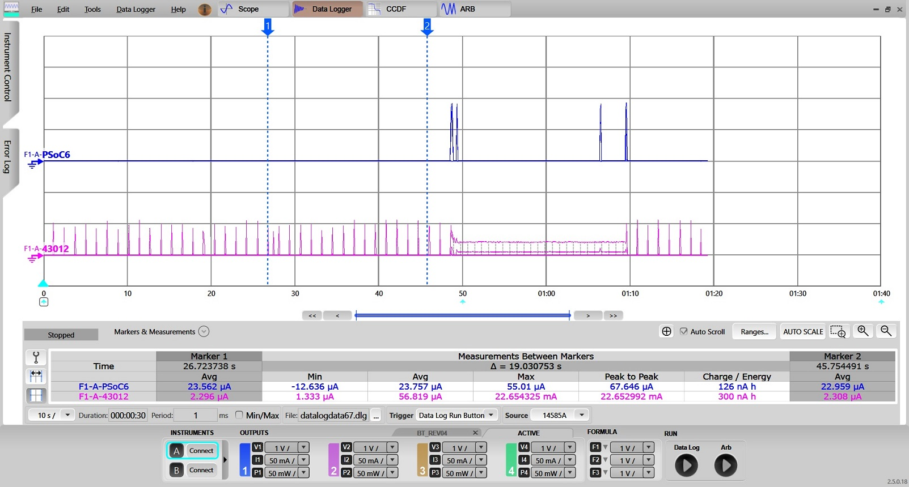
ii. Current measurements when when BT is associated
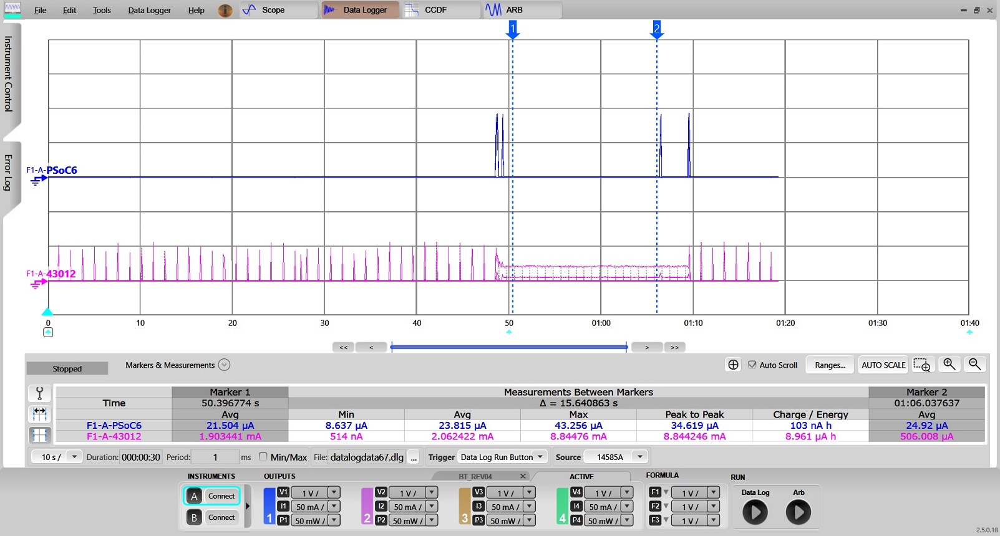
- To disable the BT Low Power feature or to change the BT_HOST_WAKE / BT_DEV_WAKE pins, Cypress recommends using the ModusToolbox Device Configurator. Use the appropriate connectivity device tab (for the CY8CKIT_062S2_43012 board it is CYW943012WKWBG). Click the checkbox next to Power->BT to enable/disable BT low power. Follow the instructions in sections "Host wake up signal" and "Device wake up signal" to modify the BT_HOST_WAKE and BT_DEV_WAKE pins and their polarity, respectively.
BT Low Power Configuration Considerations
The following are the different flows to configure LPA middleware:
- ModusToolbox Device Configurator Flow. Generating the initialization code using the ModusToolbox Device Configurator greatly simplifies configuring the PSoC and enabling the LPA features. The ModusToolbox Device Configurator provides the user interface to set up and automatically generate the initialization code (including analog routing) and configuration structures.
- Manual Configuration Flow. Manually adding settings into configuration files. Manual implementation of the initialization code (including analog routing) and configuration structures is recommended for expert Users only.
Note If you modify the output of the ModusToolbox Device Configurator, you cannot import it back to the tool.
ModusToolbox Device Configurator Flow
Mandatory steps to avoid design.modus file modification in mbed-os folder
- Copy folder mbed-os-example-ble-Beacon/mbed-os/targets/TARGET_Cypress/TARGET_PSOC6/TARGET_CY8CKIT_062S2_43012 to mbed-os-example-ble-Beacon folder
- Delete all files in mbed-os-example-ble-Beacon/TARGET_CY8CKIT_062S2_43012 except COMPONENT_BSP_DESIGN_MODUS folder and its contents
- Rename mbed-os-example-ble-Beacon/TARGET_CY8CKIT_062S2_43012/COMPONENT_BSP_DESIGN_MODUS to mbed-os-example-ble-Beacon/TARGET_CY8CKIT_062S2_43012/CUSTOM_BSP_DESIGN_MODUS
- Delete design.cyqspi and design.cycapsense file in mbed-os-example-ble-Beacon/TARGET_CY8CKIT_062S2_43012/CUSTOM_BSP_DESIGN_MODUS
- Add/update mbed_app.json in mbed-os-example-ble-Beacon folder with below details (This will tell mbed to ignore the BSP configuration shipped with MbedOS). Make sure to add board specific target.components.remove field under target_overrides
{
"target_overrides": {
"CY8CKIT_062S2_43012": {
"target.components_remove": ["BSP_DESIGN_MODUS"]
}
}
}
- Open mbed-os-example-ble-Beacon/TARGET_CY8CKIT_062S2_43012/CUSTOM_BSP_DESIGN_MODUS/design.modus
- Select Wi-Fi Radio device tab (for example, CYW4343WKUBG).
- Enable the BT resource and go to the BT Parameters pane to configure the LPA Middleware.
- Enable BT Wake Configuration.
- Choose a pin for Host-wake-up signal. Refer to the kit datasheet to find out which pin is routed on board PCB.
- Choose a pin for Device-wake-up signal and Device-wake-up trigger interrupt type. Refer to the kit datasheet to find out which pin is routed on board PCB.
- Perform File->Save to generate initialization code.
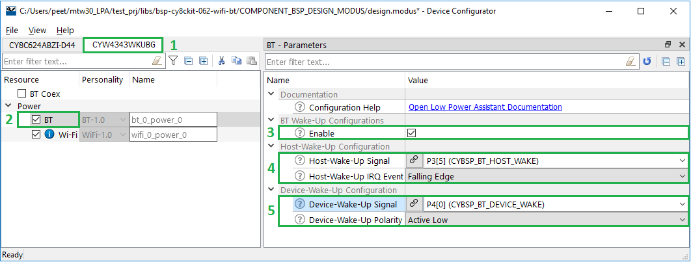
After saving the configuration file, the generated code is available under the GeneratedSource folder, located next to the design.modus file in the BSP:
- C Data File: /GeneratedSource/cycfg_connectivity_bt.c
- C Header File: /GeneratedSource/cycfg_connectivity_bt.h
Manual Configuration Flow
To configure MCU LPA Middleware related parameters not using ModusToolbox Device Configurator, do the following steps:
- Find and open the cycfg_connectivity_bt.h file under .../COMPONENT_BSP_DESIGN_MODUS/GeneratedSource/folder with a text editor.
- To configure Host-Wake-Up Signal parameter add/modify the following macros:
#define CYCFG_BT_HOST_WAKE_GPIO CYBSP_CSD_TX_HAL_PORT_PIN
#define CYCFG_BT_HOST_WAKE_IRQ_EVENT CYCFG_BT_WAKE_EVENT_ACTIVE_LOW
- To configure Device-Wake-Up Signal parameter add/modify the following macros:
#define CYCFG_BT_DEV_WAKE_GPIO CYBSP_WIFI_SDIO_DAT0_HAL_PORT_PIN
#define CYCFG_BT_DEV_WAKE_POLARITY CYCFG_BT_WAKE_EVENT_ACTIVE_LOW
- Save changes.
Note Using the ModusToolbox Device Configurator overwrites changes you made in the cycfg_connectivity_bt.h file.
Note The board Pin connections must match the manual settings. If the BSP pins are being changed, then it will require some board rework to match the hardware connections to the manually changed connections.
Configuration Parameters
The following parameters and their mapping to macros are available:
| Category | Parameter | Description | Parameter values |
| Host Wake Configuration | Host-Wake-Up Signal | Select the host pin which is connected to BT device's BT_HOST_WAKE signal. |
- Empty (default)
- Any enabled pin from Pin tab
|
| Host Wake Configuration | Host-Wake-IRQ-Event | Select the Trigger for Host wake IRQ event. |
- Falling Edge (Active Low) (default)
- Rising Edge (Active High)
|
| BT Device Wake Configuration | Device-Wake-Up Signal | Select the host pin which is connected to BT device's BT_DEV_WAKE signal. |
- Empty (default)
- Any enabled pin from Pin tab
|
| BT Device Wake Configuration | Device-Wake-Up Polarity | Select the Polarity condition for BT_DEV_WAKE signal. |
- Active Low (default)
- Active High
|
How to Measure Power Consumption
This section describes how to measure power consumption for the CY8CKIT-062S2-43012 kit used in the Quick Start Guide sections. Refer to the guide of your kit of how to measure power consumption.
To prepare your equipment and measure the current consumption do the following steps:
- DC Power analyzer used:
- Disconnect the KitProg USB cable to power off the board.
Optional: To prevent the current leakages and observe the real current consumption remove the following components:
- For base board versions > Rev02 : Remove the jumper J25.
- For base board versions <= Rev02 : Remove the potentiometer R1.
Note If you do not remove the component you still be able to observe approximate current consumption but due to the current leakage it is slightly higher.
- Connect the negative probe to the GND test point.
- Remove the J15 jumper and connect the positive probe to the J15 P6.VDD pin for PSoC6 Measurement.
- Configure the DC Power Analyzer to 3.3 V DC output.
- Remove the J8 jumper and connect the positive probe to the J8 VBAT 1 pin for WLAN 43012 Measurement.
- Configure the DC Power Analyzer to 3.3 V DC output.
- Power on the board by connecting the KitProg USB cable again.
- Enable DC output on the DC Power Analyzer.
- Ammeter used:
- Disconnect the KitProg USB cable to power off the board.
Optional: To prevent the current leakages and observe the real current consumption remove the following components:
- For base board versions > Rev02 : Remove the jumper J25.
- For base board versions <= Rev02 : Remove the potentiometer R1.
Note If you do not remove the component you still be able to observe approximate current consumption but due to the current leakage it is slightly higher.
- Remove the J15 jumper and connect the negative probe to the J15 P6.VDD pin for PSoC6 Measurement.
- Connect the positive probe to the J15 VTARG pin.
- Remove the J8 jumper and connect the negative probe to the J8 VCC VBAT 1 pin for WLAN 43012 Measurement.
- Connect the positive probe to the J8 VCC VBAT pin (Pin 2).
- Power on the board by connecting the KitProg USB cable again.
- Turn on the Ammeter.
Performance Data
Note The Performance Data report is measured on CY8CKIT_062S2_43012 board.
| Quick Start Guide Example | Based On | PSoC6 + CYW943012 current
Without LPA | PSoC6 + CYW943012 current
With LPA | Notes |
| MCU Low Power QSG | mbed-os-blinky-led | 17.9mA | 25.9uA | Without LPA: MCU Idle power mode set to Active
With LPA: MCU Idle power mode set to Deep Sleep |
| Wi-Fi ARP offload QSG | mbed-os-example-wifi | 10.6mA | 1.6mA | Without LPA: ARP offload not enabled
With LPA: ARP offloads enabled
MCU Idle power mode set to Deep Sleep for both use cases |
| Wi-Fi Packet filter QSG | mbed-os-example-wifi | 7.7mA | 2.0mA | Without LPA: No Packet filters configured
With LPA: ICMP ping packets filtered
MCU Idle power mode set to Deep Sleep for both use cases |
| BT Low Power QSG | mbed-os-example-ble-Beacon | 12.5mA | 80.5uA | BT Not associated
Without LPA: BT low power not enabled
With LPA: BT low power enabled
MCU Idle power mode set to Deep Sleep for both use cases |
| BT Low Power QSG | mbed-os-example-ble-Beacon | 18.5mA | 2.0mA | BT Associated
Without LPA: BT low power not enabled
With LPA: BT low power enabled
MCU Idle power mode set to Deep Sleep for both use cases |
Supported Software and Tools
This version of the LPA Middleware was validated for compatibility with the following Software and Tools:
| Software and Tools | Version |
| ModusToolbox Software Environment | 2.0 |
| - ModusToolbox Device Configurator | 2.0 |
| - Power Personality in Device Configurator | 2.0 |
| - Wi-Fi Personality in Device Configurator | 2.0 |
| - BT Personality in Device Configurator | 2.0 |
| GCC Compiler | 7.2.1 |
| IAR Compiler | 8.32 |
| ARM Compiler 6 | 6.11 |
| MBED OS | 5.14.2 |
MISRA-C Compliance
If you need a MISRA compliance report for this library, please create a ticket at www.cypress.com/support
Errata
This section lists the known problems with the LPA middleware.
| Cypress ID | Known Issue | Workaround |
| 1395 | Host application will not be notified of the join status when Station is roaming or AP config change such as DHCP pool etc.. | Needs reboot and associate to AP again |
Changelog
| Version | Changes | Reason for Change |
| 1.0 | The initial version | |
More Information
For more information, Cypress highly recommends starting with these documents.
Note Links to other software component's documentation (middleware and PDL) point to Cypress GitHub and the latest available version of the software. To get documentation for a specific version, download it from GitHub and unzip the component archive. The documentation is available in the docs folder.